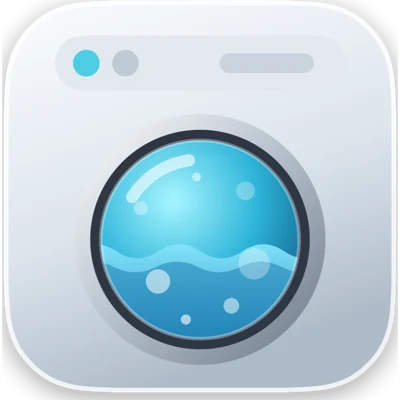
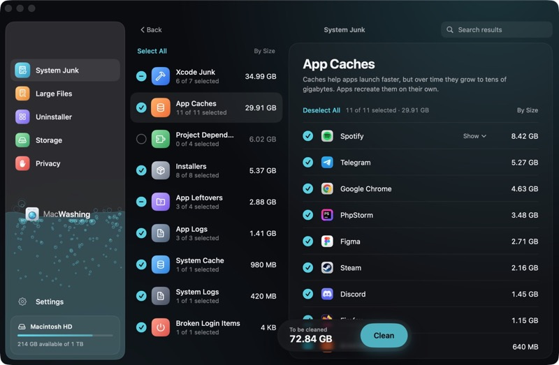
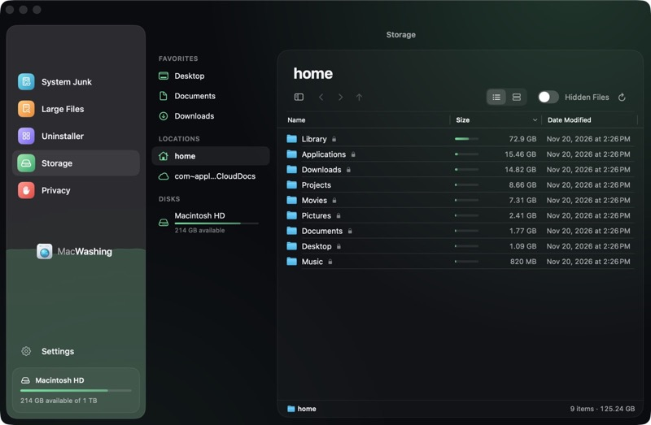
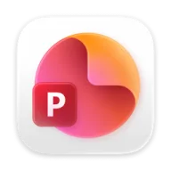

Xcode Junk
Xcode DerivedData, debugging data for old iOS versions and simulator caches.

MacWashing keeps your Mac healthy and brings back its youth: it clears cache and junk, helps you find large files and free up disk space. Taking care of your Mac is what MacWashing is here for.

Finds everything that can go without harming your system, including much of System Data: user and system caches, app logs, leftovers of apps you removed long ago, forgotten installers and gigabytes of Xcode junk.
App caches grow to tens of gigabytes.
Xcode DerivedData, debugging data for old iOS versions and simulator caches.
Caches of Final Cut Pro, Premiere Pro, Lightroom and more.
Disk images and packages forgotten in Downloads.
Settings and caches of apps that are no longer on your Mac.
From apps and the system: nothing needs them to work.
node_modules, Pods, .venv and other dependencies in projects you haven’t opened for over 90 days.
The Final Cut Pro and Premiere Pro cache, Lightroom previews and the DaVinci Resolve cache take tens of gigabytes on an active project. Your photos, videos and projects stay where they are.
Final Cut Pro · Premiere Pro · Lightroom Classic · DaVinci Resolve · iMovie
Dragging an app to the Trash doesn’t uninstall it completely: its settings, caches and background items stay behind. The Uninstaller finds them and removes everything together.

Videos, archives and disk images you downloaded once and never opened again. MacWashing helps you find large, long-forgotten files on the disks you choose, and then you decide their fate.

A Finder-style browser that shows the real size of every folder. Walk through your home folder, iCloud Drive, the Trash and every disk, and clear out what you no longer need.

Shows which apps you let use the camera, microphone, screen recording, files, automation and every other macOS permission — and takes access back from the ones that don’t need it.

Checking more than 930 apps took a lot of work. For each one we mapped the folders it works in, checked every one of them and decided what counts as junk. The database is open: read it, check it, suggest new rules.







MacWashing removes only what it can explain: every file is matched to a known app or a known kind of junk.
We build the database by watching how apps really behave.
We don’t touch what may matter to you. Only what we’re sure about.
Open any find and look it over before it’s removed.
Turn on removal to the Trash and leave your worries behind.
Waits until you finish your work.
Scanning works without the internet, and your data stays with you.
Yes. Every section works without limits, and there is no account. The code is open under GPL-3.0: anyone can read it, build it and suggest changes on GitHub.
MacWashing removes only files it can match to a known app or a known kind of junk in its rules database, and only in places apps leave files. Standard system folders and Apple’s files are never touched. You can review and uncheck every item.
macOS hides caches, logs and the permissions database from apps without Full Disk Access. MacWashing needs it to see them. Everything is scanned on your Mac. No file names or lists are sent anywhere.
By default MacWashing deletes right away, so the space is freed at once. If you want to be able to change your mind, choose To Trash in Settings ▸ Removal: then anything removed can be put back until you empty the Trash.
Any Mac running macOS 14 Sonoma or later, with Apple silicon or Intel.
Moving an app to the Trash removes only the app itself. Its settings, caches and background items stay in your Library folder, take up space and sometimes keep launching. In MacWashing, open the Uninstaller and check the app: everything it left is found through the rules database and removed together with it.
System Data in Storage settings is everything macOS doesn’t sort into its other categories: caches, logs, Xcode data, Time Machine local snapshots and more. MacWashing removes the caches, logs and Xcode junk. Snapshots and macOS’s own files are left alone, so the number goes down, but not to zero.
Most often a Mac slows down when its startup disk is nearly full: macOS has no room left for swap files and caches. Clearing caches, logs, Xcode junk and forgotten installers gives the space back. If there is plenty of free space and the Mac is still slow, the cause is more likely the processor or memory load — MacWashing doesn’t fix that.
The app checks GitHub once a day: new versions come from this repository’s releases, signed and notarized, and a newer rules database from its updates folder. Both are signed, and the app checks the signatures before using anything.